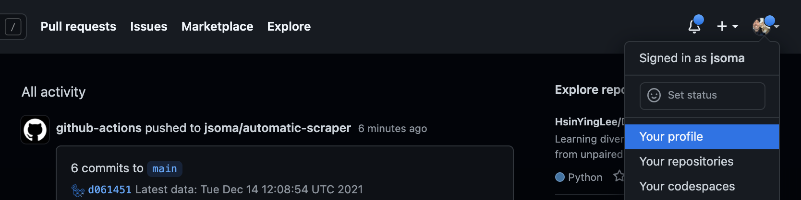
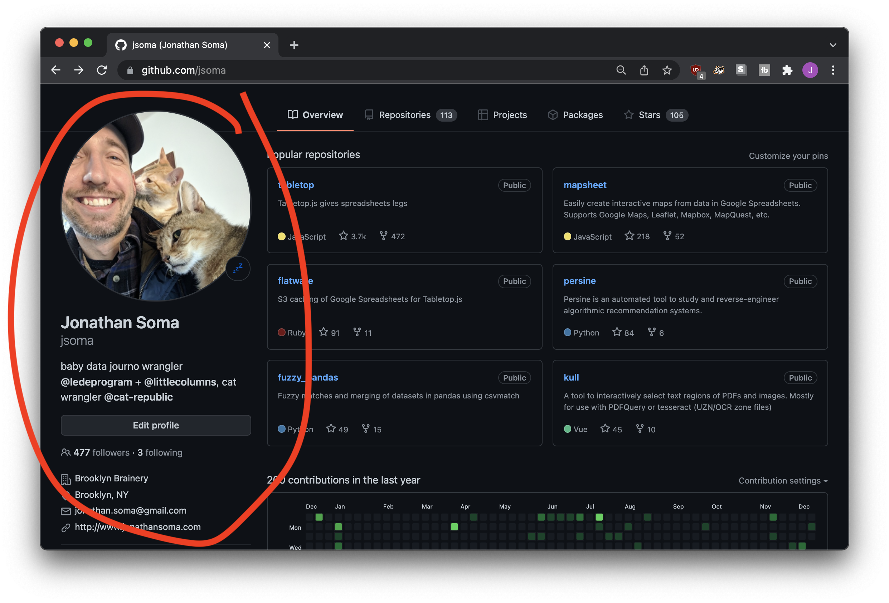
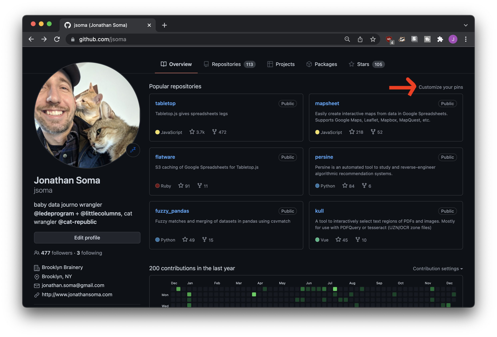
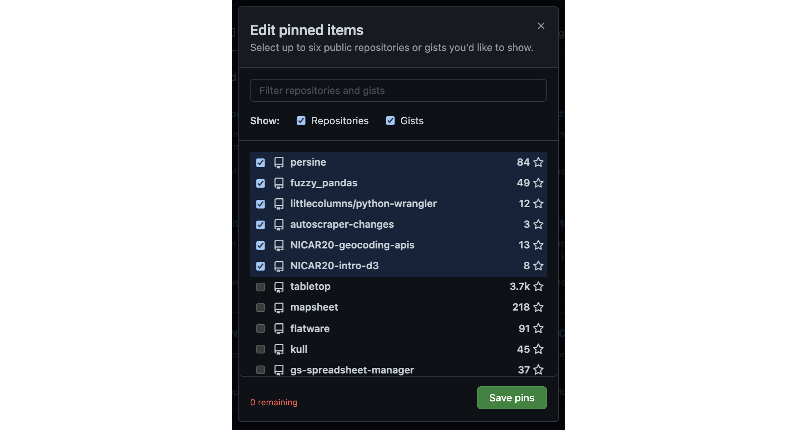
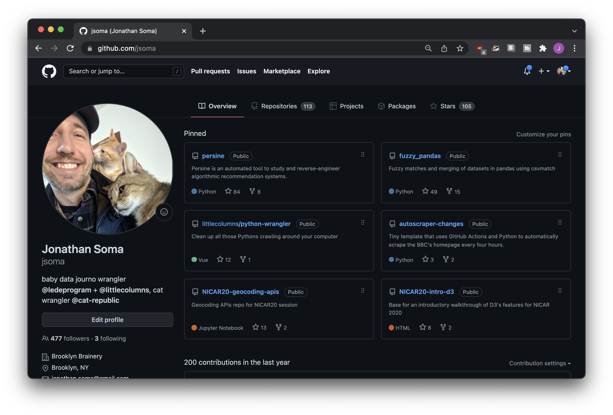
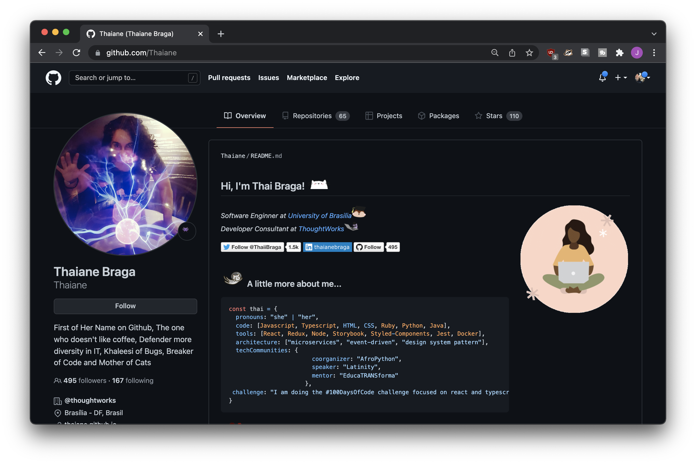

Customizing your GitHub Profile
Although people won’t spend too long gazing at your GitHub profile page, a little investment in fixing it up will go a long way!
To view your GitHub profile, click your account icon in the upper-right corner of the screen, then select Your profile.

GitHub has a profile guide to step you through all sorts of topics, but we’ll hit the big ones here.
Updating your bio
Your GitHub profile contains who columns of information - the left hand side is about you as a person, and the right hand side is (generally, mostly) about your code. We’ll start by updating your personal profile!

Click the Edit profile button and you’ll be able to fill out all sorts of fields about yourself. You can also edit much of the same information at https://github.com/settings/profile.
At the very least, you should add a name, upload a picture (if you feel comfortable), and write a short bio about who you are. A link to your homepage would be nice, but if you don’t have one? No problem, we’ll fix that up later!
Selecting featured repositories
By default, your profile will list your popular repositories on the right-hand side.
If you don’t like what GitHub has selected, click the Customize your pins link to the right of “Popular repositories.” This will allow you to hand-select what repos are shown on your profile page.

You’ll be presented with a list of your repositories and gists to display on your page. Select up to six!
If you haven’t used them yet, gists are like tiny baby repositories. You can create them at gist.github.com

Figuring out which repositories to feature might be tough. Maybe you have one or two projects you’re proud of, and then a number of scratch or homework repostiories that aren’t so impressive. Your first instinct might be to select your two project repos, and then hide the homework away.
Don’t use this as an opportunity to hide all of your less exciting repositories! Be sure to pick a full six repositories: the best repos first, then a few of the other, less exciting ones to fill up the space.
After you save, you’ll be able to use the ⠠ button to position your favorites at the top. That way the one you’re proud of will get all the attention, but you’ll still have a nice full-looking profile!
Note that you need to save your selections before you can order them.
After you’ve picked the repositories you’d like to feature on your profile page, click Save pins and you’ll be sent to view the finished product.

Beautiful!
BONUS: A profile README
Back in 2020 GitHub released the ability to add READMEs to your profile.
This can get very crazy, very fast – pictures, links, tables, animated gifs, anything is possible! For example, check out Thaiane Braga’s GitHub profile:

Head on over to Abhishek Naidu’s Awesome GitHub Profile README list for more inspiration.
If you feel like your personality and skills can’t be contained in that tiny bio box, you can use GitHub’s guide to set up a custom README-based profile. The process isn’t too tough, you’ll just create a repo named after your username and place a README.md inside of it.